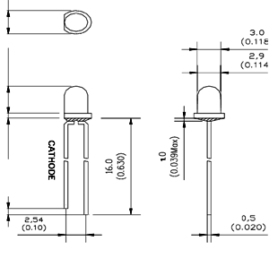

Фотодиод 3mm
Чертёж:
Короткая ножка - коллектор (-)
Длинная ножка - эмиттер (+)
GNL-3012PD - фотодиод (диаметр 3 мм)

Абсолютные максимальные параметры (при t=25°C)
Максимальный постоянный прямой ток 20 mA
Постоянное обратное напряжение 5 V
Постоянный обратный ток (Vr-5V) 10mA
Максимальный прямой ток, tw=1msec, Q=1/20 150mA
Диапазон рабочих температур -25...+80°С
Температура хранения -50...+85°С
Условия пайки (5 сек, 1.6 мм от корпуса)
http://insvetcom.ru/shop/UID_2252.html